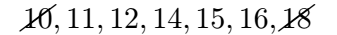
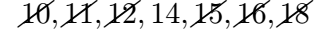
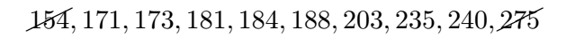
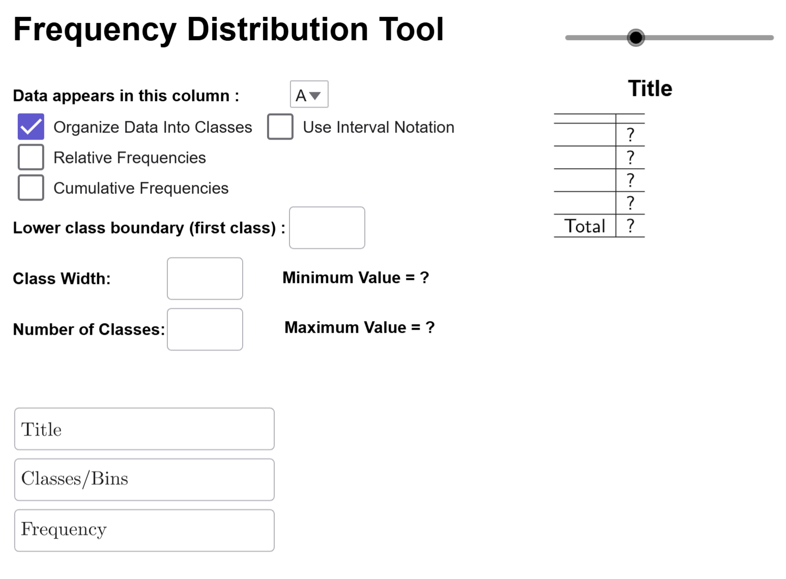
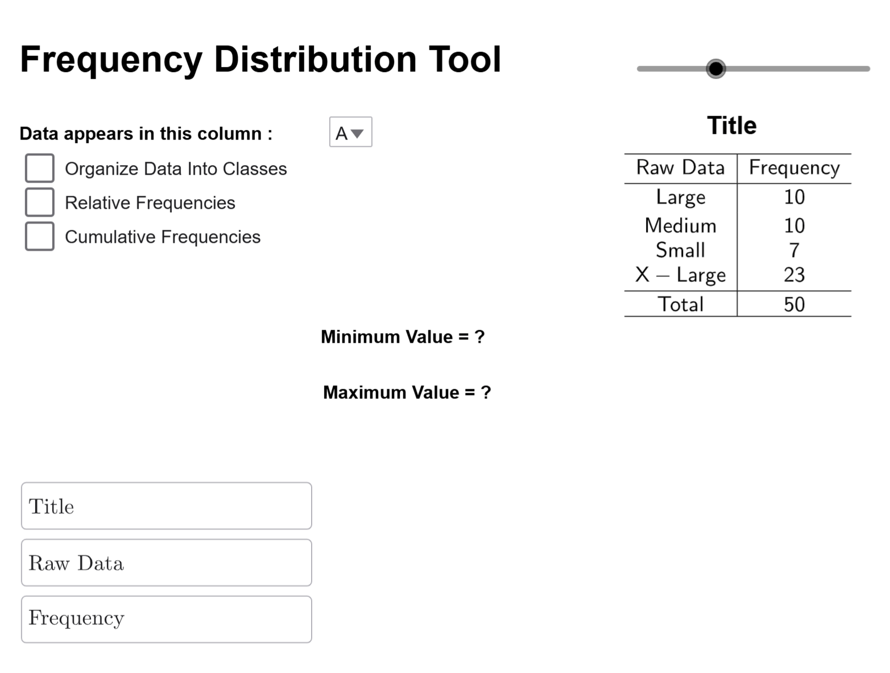

Calculating the Mean of a Data Set
The mean, or average, is a fundamental statistical measure that represents the center of a dataset by balancing values above and below it. It is widely used in fields like business, healthcare, and education. This section explains the mean, its formulas, and how to calculate it manually and with technology. Through examples, we will see how the mean helps summarize and interpret data efficiently.
Mean
What is the Mean?
The mean, also commonly known as the average, is the sum of all data values divided by the number of values. The sample mean is often denoted as \( \bar{{x}} \), while the population mean is denoted as \( \mu \). The mathematical formulas for calculating the mean are:
\[ \begin{align*} \textbf{Population Mean: }&& \mu &= \dfrac{\sum x}{{N}} \\\\ \textbf{Sample Mean: } &&\bar{{x}} &= \dfrac{\sum x}{{n}} \end{align*} \]What do these symbols mean?
Although the primary focus of this text is interpretation, it is still a math textbook, so we will encounter mathematical symbols and formulas throughout. To aid our understanding, we will explain these symbols as they appear, especially since many of these will be used repeatedly throughout this text.
- The symbol \( \sum \) means "sum" or "add everything up."
- The symbol \( x \) represents individual data values.
- \( N \) denotes the total number of values in a population and is often referred to as the population size.
- \( n \) denotes the number of values in a sample and is often referred to as the sample size.
It is important to note that \( \sum \) cannot stand alone; it must be followed by another symbol specifying what is being summed. In our formulas, we see \( \sum x \) in the numerator, which instructs us to "add up all the data values." This notation is especially useful when dealing with large datasets containing hundreds or thousands of values, as it eliminates the need to list each number individually.
Why do we have two formulas for mean?
Populations and samples each have their own formulas for related concepts, such as the mean. In this case, the formulas are functionally identical, but as we explore other topics later in this chapter, we will see that some formulas differ between populations and samples.
Additionally, note that \( \mu \) represents the population mean and is classified as a parameter, while \( \overline{{x}} \) represents the sample mean and is classified as a statistic.
But why do we use \( \mu \) (pronounced "mew" and written in English as "mu") instead of a more familiar letter? By convention, parameters (which describe populations) are often represented by Greek letters, whereas statistics (which describe samples) are typically denoted using more familiar Latin letters from the English alphabet.
Now that we know the formulas for mean and how to interpret them, let's do a quick example to make sure we understand how to perform a calculation.
Example
Consider the following data representing test scores of five students on their first exam: 75, 80, 85, 90, 95. Use this data to calculate the average exam score for this sample.
| Score |
|---|
| 75 |
| 80 |
| 85 |
| 90 |
| 95 |
Solution
To find the mean of this sample, sum all the test scores and divide by the number of scores. In mathematical terms, we calculate: \[ \sum x = 75 + 80 + 85 + 90 + 95 = 425 \] since \( x \) represents an individual test score and \( \sum x \) means to sum all the test scores. The sample size is 5, so we have \( n = 5 \). Combining this information, the final calculation is: \[ \begin{align*} \bar{{x}} &= \dfrac{\sum x}{{n}} \ &= \dfrac{75 + 80 + 85 + 90 + 95}{{5}} \ &= \dfrac{{425}}{{5}} \ &= 85 \end{align*} \] $$\tag*{\(\blacksquare\)}$$
Now that we understand how to calculate the mean, let's focus on what this number actually represents. One way to think about the mean is in terms of wealth redistribution. In society, some people have more money than others. The mean, or average, represents the amount each person would have if we could redistribute wealth so that everyone had exactly the same amount.
We can see this concept clearly using our previous example. Notice that the score of 75 is 10 points below the mean, while the score of 95 is 10 points above the mean. If we take 10 points from the person who scored 95 and give them to the person who scored 75, both students would now have 85 points. Similarly, since the score of 80 is 5 points below the mean and the score of 90 is 5 points above the mean, we can transfer 5 points from the student who scored 90 to the student who scored 80, so that both also end up with 85. After these adjustments, every student has a score of 85.
This illustrates what the mean represents—it balances out values above and below average to give a single number that evenly distributes the data across all individuals in the sample or population.
Of course, we don’t actually redistribute scores or money in this way. The purpose of the mean is to help us understand the central tendency of a dataset—the balance point between those with the highest values and those with the lowest.
Our next example provides an interactive way to illustrate this concept of balancing.
Example 2
Complete the Understanding the Idea of Average Value/Mean interactive example below.
Now that we understand what a mean is and how to calculate a mean, we need to see how to calculate the mean using a technology since many datasets number in the hundreds and thousands. Manually calculating large datasets is time-consuming and prone to errors; in these circumstances, it is okay to let the technology do the heavy lifting.
Example
The following Law School Admission Test (LSAT) scores for a sample of 50 students are given below. Find the mean of the sample using the Summary Statistics Calculator.
| LSAT Scores | |||||||||
|---|---|---|---|---|---|---|---|---|---|
| 174 | 172 | 169 | 176 | 169 | 170 | 175 | 171 | 168 | 177 |
| 165 | 180 | 173 | 166 | 178 | 170 | 174 | 167 | 179 | 172 |
| 163 | 181 | 171 | 164 | 177 | 169 | 175 | 168 | 180 | 170 |
| 162 | 182 | 170 | 165 | 176 | 168 | 174 | 166 | 178 | 171 |
| 161 | 183 | 169 | 167 | 175 | 167 | 173 | 165 | 177 | 172 |
Solution
We load the data into the Summary Statistics Calculator with its default settings, and \(\overline{{x}}\) is calculated automatically. The result is \(\overline{{x}}\approx 171.68\).

$$\tag*{\(\blacksquare\)}$$
Conclusion
The mean provides a simple yet powerful way to understand the central tendency of a dataset. It balances values above and below it, making it a key tool for data analysis. While calculating the mean manually is useful for small datasets, technology is essential for handling larger ones efficiently. Understanding the mean is a crucial step in mastering statistical analysis as we will be repeatedly using the mean throughout this entire text.
Calculating the Median of a Data Set
The median is a measure of central tendency that represents the middle value of an ordered dataset. In this section, we will define the median, discuss how to calculate it, and explore examples both by hand and using technology.
Median
What is the Median?
The median of an ordered dataset is the value that separates the lower 50% from the upper 50%. This number may or may not be part of the dataset. Unlike the mean, the median does not have a universally accepted notation, but many people represent it as \( M \).
How do I calculate the Median?
Let \( n \) be the sample size of your data.
- Step 1: Order the data from smallest to largest. Ensure all repeated values are included.
- Step 2: Determine whether \( n \) is even or odd:
- If \( n \) is odd, the median is the exact middle data value in the ordered list.
- If \( n \) is even, the median is the average of the two middle data values in the ordered list.
While the procedure for calculating the median seems hard on the surface, it is in fact very easy to calculate, especially for small data sets. The next two examples will demonstrate the process step by step. The first example illustrates how to find the median with an odd sample size.
Example
The following weekly hours spent studying for a sample of 7 students are recorded below. Find the median number of study hours by hand.
| Study Hours Per Week | ||||||
|---|---|---|---|---|---|---|
| 12 | 15 | 10 | 18 | 14 | 11 | 16 |
Solution
First, order the data from smallest to largest: 
Next, strike out the first and last numbers:

Then, strike out the next two inner numbers:
Again, strike out the next two inner numbers:

Now, notice that only one number remains:
Since there is only one number left, \(14\) is our median.
Note
What do we mean by separating the upper 50% of data from the lower 50% of data? In this case, there are the same amount of numbers to the left of 14 as there are numbers to the right of 14. Notice I do not say lower or higher than 14 since there can be repetitions of numbers in the list. The median is determined by its position in the ordered list, not its value.
$$\tag*{\(\blacksquare\)}$$
Finding the median for an even sample size follows the same steps, except for the final calculation.
Example
The cholesterol levels (mg/dL) of a sample of 10 people are recorded below. Find the median cholesterol level by hand.
| Cholesterol Level (mg/dL) | ||||
|---|---|---|---|---|
| 154 | 240 | 171 | 188 | 235 |
| 203 | 184 | 173 | 181 | 275 |
Solution
First, order the data from smallest to largest:
Now, strike off the first and last numbers in the list:

Then, strike out the next two inner numbers:
Again, strike out the next two inner numbers:
Again, strike out the next two inner numbers: 
Instead of arriving at a single central number, we end up with two central numbers—184 and 188:
When we end up with two central numbers we will average them together to find the median: \[\text{median }=\dfrac{184+188}{{2}}=186\]
Note
What does it mean to separate the upper 50% from the lower 50% of the data? The median is the average of the two central numbers, so it may not be an actual data point, even if it matches a value in the list. It lies exactly between the two central numbers, dividing the dataset into two equal parts. In this case, the lower half consists of 154, 171, 173, 181, and 184, while the upper half consists of 188, 203, 235, 240, and 275.
$$\tag*{\(\blacksquare\)}$$
Just like the mean, we often compute the median from large data sets. Our next example uses our Summary Statistics Calculator to compute the median.
Example
The following LSAT scores for a sample of 50 students are given below. Find the median of the sample using the Summary Statistics Calculator.
| LSAT Scores | |||||||||
|---|---|---|---|---|---|---|---|---|---|
| 174 | 172 | 169 | 176 | 169 | 170 | 175 | 171 | 168 | 177 |
| 165 | 180 | 173 | 166 | 178 | 170 | 174 | 167 | 179 | 172 |
| 163 | 181 | 171 | 164 | 177 | 169 | 175 | 168 | 180 | 170 |
Solution
We load the data into the Summary Statistics Calculator with its default settings.
Click on the Median checkbox to reveal the value of the median.

Therefore, the value of the median is 171.
$$\tag*{\(\blacksquare\)}$$
Conclusion
The median is a valuable measure of central tendency because it is resistant to outliers. By understanding how to calculate the median manually and using technology, we can analyze data more effectively in various contexts.
Calculating the Mode of a Dataset
The mode is a measure of central tendency that identifies the most frequently occurring value(s) in a dataset. Unlike the mean and median, the mode does not require numerical calculations but instead focuses on how often values appear. In this section, we will define the mode, discuss its characteristics, and explore examples of how to determine and interpret it.
Mode
What is the Mode?
The mode of a dataset is the value(s) that occur locally with the highest frequency.
What Does "Occur Locally" Mean?
When discussing the shape of histograms, we encountered unimodal, multimodal, and uniform distributions. The mode corresponds to the peaks in these distributions.
- A unimodal distribution has one peak.

- A multimodal distribution has multiple peaks with similar frequencies.

- A uniform distribution has no distinct peaks, meaning no mode exists.

Identifying these peaks precisely requires advanced mathematical techniques, such as calculus, even though many multimodal distributions are intuitive and can be visualized easily with histograms, stem-and-leaf plots, and dot plots. (Human height, for example, is bimodal because there is a mode for men's height and a mode for women's height since, on average, men tend to be about five inches taller than women.) Therefore, we will refine our definition of mode to avoid local considerations.
Definition: Mode
The mode of a dataset is the value(s) that occur most frequently.
What Changed in This Definition?
By removing the term "occur locally," we ensure that all identified modes have the same frequency. This revised definition makes it easier to identify all the modes at a glance from frequency distributions.
Example
Find the mode of the 2016-2017 tuition and fees (in thousands of dollars) for the top 14 universities in the U.S. by hand.
| Tuition and Fees | ||||||
|---|---|---|---|---|---|---|
| 45 | 47 | 52 | 49 | 55 | 48 | 48 |
| 51 | 51 | 50 | 51 | 48 | 51 | 51 |
Solution
By observation, the most frequently occurring value is 51, which appears five times.

Thus, the mode is 51.
$$\tag*{\(\blacksquare\)}$$
Example
The following LSAT scores for a sample of 50 students are recorded below. Use the Summary Statistics Calculator to determine if a mode exists, and if it does, identify the mode(s). Also, classify the dataset as unimodal, multimodal, or having no mode.
| LSAT Scores | |||||||||
|---|---|---|---|---|---|---|---|---|---|
| 174 | 172 | 169 | 176 | 169 | 170 | 175 | 171 | 168 | 177 |
| 165 | 180 | 173 | 166 | 178 | 170 | 174 | 167 | 179 | 172 |
| 163 | 181 | 171 | 164 | 177 | 169 | 175 | 168 | 180 | 170 |
Solution
Copy the data and enter it into the Summary Statistics Calculator.
Click on the Mode Checkbox.
The tool reveals that 169 and 170 are the modes of the data set, and indicates that this is a bimodal set, which is a type of multimodal distribution.
$$\tag*{\(\blacksquare\)}$$
The mode is particularly useful to summarize certain types of qualitative data. Unfortunately, the Summary Statistics Calculator does not handle qualitative data. Therefore, we will use the Frequency Distribution Tool to make a frequency distribution of the data and then find the data point(s) with the highest frequency.
Example
The following dataset represents the size of shirts sold over the last 30 days at a clothing retailer. Use the Frequency Distribution Tool to determine the mode of the dataset.
| Shirt Sizes | |||||||||
|---|---|---|---|---|---|---|---|---|---|
| Small | Medium | Large | X-Large | X-Large | Medium | Large | X-Large | Small | X-Large |
| Medium | X-Large | X-Large | Large | Small | X-Large | Medium | X-Large | Large | X-Large |
| X-Large | X-Large | Large | Small | Medium | X-Large | X-Large | X-Large | Large | Medium |
| X-Large | Large | Medium | X-Large | X-Large | Small | Medium | Large | X-Large | X-Large |
| Large | X-Large | Medium | Small | X-Large | X-Large | X-Large | Large | Small | Medium |
Solution
Load the data into the Frequency Distribution Tool, and nothing should appear since we only make classes with quantitative data.

To display a frequency distribution of the raw data, deselect the 'Organize Data Into Classes' checkbox. The distribution will then appear on the right.

From the distribution, the most frequently sold size was X-Large, with a count of 23.
Conclusion
The mode helps identify the most common values in a dataset, making it useful for analyzing both quantitative and qualitative data. Unlike the mean and median, the mode may not always exist and can have multiple values. By understanding how to determine the mode and classify distributions as unimodal, multimodal, or having no mode, we gain deeper insights into data patterns.
How Skewness Affects the Mean, Median, and Mode of a Dataset
Measures of central tendency—mean, median, and mode—help us describe datasets. However, their values are influenced by the shape of the distribution and the presence of outliers. In this section, we will define outliers, explore how outliers impact these measures, and how their relationships change based on the skewness of a dataset.
Outliers
What is an Outlier?
An outlier is a data point that does not follow the overall pattern or shape of a distribution. These are data points that are typically much larger or much smaller than other points in the data set.
Let's look at an example to see how outliers affect the mean, median and mode.
Example 1
A list of 5 exam scores are given below.
\[78\qquad 82\qquad 84\qquad 91\qquad 91\]
- Part A: Find the mean, median, and mode of this distribution.
- Part B:Another student scored a 41 on the exam, which is an outlier compared to the other five scores. Revaluate the mean, median, and mode.
- Part C: Which measure of center changed the least? Which changed the most? Did any remain unchanged?
Solution
Part A
- \(\textbf{mean } =\dfrac{78+82+84+91+91}{{5}}=85.2\)
- \(\textbf{median }=84\)
- \(\textbf{mode }=91\)
Part B
- \(\textbf{mean } =\dfrac{41+78+82+84+91+91}{{6}}=77.83\)
- \(\textbf{median }=\dfrac{82+84}{{2}}=81\)
- \(\textbf{mode }=91\)
Part C
- The mean changed the most.
- The median changed the least.
- The mode did not change at all.
Since an outlier affects each one of these measurements differently, we get the following definition.
What is resistance to outliers?
A statistic is resistant to outliers if extreme values cause little to no change in its value.
In the Example 1, notice that
- the mean is NOT RESISTANT to outliers.
- the median and mode are resistant to outliers.
We will use this idea to describe the relative locations of the mean, median, and mode in unimodal distributions.
The Mean, Median, and Mode in Unimodal Distributions
Normal Distribution
In a normal distribution, we have that \[\text{mean }=\text{ median }=\text{ mode.}\] Since many real-world datasets follow a normal distribution, this is one reason we often focus on the mean rather than the median or mode. The following figure demonstrates the positions of the mean, median, and median by marking their location on top of a normal distribution.

Skew-Right Distribution
In a skew-right distribution, part of the reason we get a skew to the right is because there is unusually large data in the distribution. Unusually large data will make the value of the mean and median shift to the right, with the mean being pulled further to the right than the median. The mode remains unchanged in this case. Overall, this change from a normal distribution can be summarized for skew-right distributions as \[\text{mode }<\text{ median }<\text{ mean}\] and visually as
Skew-Left Distribution
In a skew-left distribution, part of the reason we get a skew to the left is because there is unusually small data in the distribution. Unusually small data will make the value of the mean and median shift to the left, with the mean being pulled further to the left than the median. The mode remains unchanged in this case. Overall, this change from a normal distribution can be summarized for skew-right distributions as \[\text{mean }<\text{ median }<\text{ mode}\] and visually as

Conclusion
The mean, median, and mode each describe the center of a dataset but respond differently to outliers and skewness. The mean is sensitive to extreme values and shifts in the direction of skewness, while the median is resistant to outliers and better represents center in skewed distributions. The mode remains unchanged by outliers and identifies the most frequently occurring value(s). Understanding these differences helps in choosing the most appropriate measure for analyzing real-world data. We will explore that issue in more depth later in this chapter.
How to Calculate a Weighted Mean
The mean is a fundamental measure of central tendency, but not all data points contribute equally in every scenario. In cases where there are a lot of repeated values, we use the weighted mean to calculate the mean faster than a standard calculation. This section will explore different methods for calculating a weighted mean and demonstrate its applications through practical examples.
Weighted Means
Example 1
A small retail store tracks the number of sales transactions completed by seven different employees during a particular week \[ 12, 15, 15, 18, 18, 18, 25 \] Calculate the mean using the following methods.
- Part A: Using the Definition of the Mean
- Part B: Using the Definition of Multiplication to Simplify the Numerator
- Part C: Using the Definition of Multiplication and Simplifying the Fraction
Solution
Part A
\[\overline{{x}}=\dfrac{12+15+15+18+18+18+25}{{7}}=\dfrac{{121}}{{7}}\approx17.29\]
Part B
We can rewrite repeated values using multiplication: \[ 12 = 1 \times 12, \quad 15+15 = 2 \times 15, \quad 18+18+18 = 3 \times 18, \quad 25 = 1 \times 25 \] Using this, we calculate the mean as: \[ \bar{{x}} = \dfrac{1\times 12 + 2\times 15 + 3\times 18 + 1\times 25}{{7}} = \dfrac{12 + 30 + 54 + 25}{{7}} \approx 17.29 \]
Important Note
Notice that each term in the numerator follows the pattern frequency \( \times \) data. Using \( f \) for frequency and \( x \) for data, we express the numerator as \( \sum (f \cdot x) \) and the denominator as \( \sum f \). This leads to the formula: \[ \bar{{x}} = \dfrac{\sum (f \cdot x)}{\sum f} \] which is useful for computing the mean from a frequency distribution.
Part C
Let's first look at the relative frequency distribution for this dataset:
| Data Value (\(x\)) | Frequency (\(f\)) | Relative Frequency \(\left(w=\dfrac{{f}}{\sum f}\right)\) |
|---|---|---|
| 12 | 1 | \(\dfrac{{1}}{{7}}\) |
| 15 | 2 | \(\dfrac{{2}}{{7}}\) |
| 18 | 3 | \(\dfrac{{3}}{{7}}\) |
| 25 | 1 | \(\dfrac{{1}}{{7}}\) |
| Total | \(\sum f=7\) | 1 |
Now, observe what happens when we simplify our calculation from part B:
\[\begin{align*}\bar{{x}} &= \dfrac{1\times 12 + 2\times 15 + 3\times 18 + 1\times 25}{{7}} \\\\&=\dfrac{1\times 12}{{7}}+\dfrac{2\times 15}{{7}}+\dfrac{3\times 18}{{7}}+\dfrac{1\times 25}{{7}}\\\\&=\dfrac{{1}}{{7}}\times 12+\dfrac{{2}}{{7}}\times 15+\dfrac{{3}}{{7}}\times 18+\dfrac{{1}}{{7}}\times 25\\\\&\approx 17.29\end{align*}\]
Important Note
Notice that in this case, we have expressed the mean as relative frequency \(\times\) data. In the context of a mean, a relative frequency is often called a weight, and that is why we are using the variable \(w\) in the table. Therefore, for a relative frequency distribution, we can express the mean as \[\overline{{x}}=\sum(w\cdot x)\] as long as the sum of the relative frequencies add to one.
But, sometimes we want to compute an average using only some of the relative frequencies instead of all of them. For example, most online gradebooks will often ignore things like exams that have not been taken yet. So, it will only use the relative frequencies for grades you already have to give you current grade. In that case, the formula for the mean becomes \[\overline{{x}}=\dfrac{\sum(w\cdot x)}{\sum w}\].
The discussion in Example 1 motivates the following definition.
What is a Weighted Mean?
A weighted mean is the mean of a dataset where each value in the dataset has varying weights or frequencies. There are two common formulas for calculating the weighted mean.
- Using Frequencies: \[ \bar{{x}} = \dfrac{\sum (f \cdot x)}{\sum f} \]
- Using Weights or Relative Frequencies: \[ \bar{{x}} = \dfrac{\sum (w \cdot x)}{\sum w} \]
Note: In many cases, the sum of the weights (\(\sum w\)) equals 1 since we usually want to include all the data, not just some of the data.
Now that we understand the weighted mean and have explored two examples, we will use the Summary Statistics Calculator to calculate the weighted mean.
Example 2
Suppose you just took your third exam, and your grade distribution is given below. Calculate your current grade using the Summary Statistics Calculator.
| Category | Grade (%) | Percentage of Grade |
|---|---|---|
| MyLab Stat | 43% | 7.5% |
| Quizzes | 63% | 7.5% |
| Exam 1 | 92% | 20% |
| Exam 2 | 67% | 20% |
| Exam 3 | 76% | 20% |
Solution
First, we load the dataset into Summary Statistics Calculator. 
Before closing the spreadsheet, let’s examine how the data is entered.The first column is just exposition data and is not relevant to the computation. Column B contains our data: the grades we get. Notice the percent symbol is dropped since GeoGebra will auto-convert the data to decimals if we include the percent symbol. In the last column, the percentage of the grade represents the weight. Since weights are given as percentages, we must convert them to decimals for accurate calculations.
After closing the spreadsheet, we will set the Problem Type to Weighted Statistics, set Data to Column B, and Weights to Column C.
The Calculator automatically computes the weighted average as \(\overline{{x}}=73.27\). Therefore, our current grade in the course is a C.
Often, data is reported through a frequency distribution rather than raw values. We can use the distribute to estimate the mean of the data using midpoints and a weighted mean. Our next example illustrates this idea.
Example 3
Use the Summary Statistics Calculator to estimate the mean gas mileage (mpg) for 24 family sedans.
| Gas Mileage (mpg) | Frequency |
|---|---|
| 22 to 27 | 16 |
| 28 to 33 | 2 |
| 34 to 39 | 2 |
| 40 to 45 | 4 |
Solution
First, we compute the midpoints for each class:
| Gas Mileage (mpg) | Midpoint | Frequency |
|---|---|---|
| 22 to 27 | 24.5 | 16 |
| 28 to 33 | 30.5 | 2 |
| 34 to 39 | 36.5 | 2 |
| 40 to 45 | 42.5 | 4 |
The midpoints become the estimated data points for the distribution. Since the data is derived from midpoints, a premade dataset is unavailable.Instead, we will manually enter the data into Summary Statistics Calculator like this: 
These notes apply to all the tools that use the Spreadsheet: Row 1 is always the header, which gives a Small Description of the Data in the Column. In our case, Midpoint and Frequency. Do not enter data into Row 1, as the tool begins scanning for data from Row 2.. In rows 2-5, we recreate the table.
Once you have entered all this data into spreadsheet, you can close it, and make sure your options are set to weighted means, data is in column A, and weights in column B. If you have everything set up correctly, the mean will automatically be computed, and you'll get this screen.
Therefore, the average gas mileage is \(\overline{{x}}=29\) mpg.
Summary
Now that we understand the weighted mean and have explored examples using both frequencies and weights, we see how it provides a quicker calculation when many data points are repeated. Using tools like the Summary Statistics Calculator, we can efficiently compute weighted means in practical scenarios, such as grades, sales, and performance tracking.
Is the Mean Enough to Describe a Dataset?
The mean is one of the most commonly used measures to summarize a dataset. While it provides useful information about the central tendency of the data, it doesn’t always tell the whole story. Different datasets can have the same mean yet exhibit vastly different distributions. In this example, we’ll explore two datasets with the same mean and analyze how they differ beyond that single statistic.
Example 1
- Part A: Find the mean of the data set \( 76, 74, 83, 97, 70 \).
- Part B: Find the mean of the data set \( 82, 81, 76, 85, 76 \).
- Part C: Even though the means are the same, how are the data sets different?
Solution
- Part A: The mean is the sum of all data values divided by the number of values in the set. The given data set is \( 76, 74, 83, 97, 70 \). \[ \begin{align*} \text{{Mean}} &= \dfrac{76 + 74 + 83 + 97 + 70}{{5}} \\\\ &= \dfrac{{400}}{{5}} \\\\ &= 80 \end{align*} \]
- Part B: The given data set is \( 82, 81, 76, 85, 76 \). We follow the same process. \[ \begin{align*} \text{{Mean}} &= \dfrac{82 + 81 + 76 + 85 + 76}{{5}} \\\\ &= \dfrac{{400}}{{5}} \\\\ &= 80 \end{align*} \]
- Part C: Even though both data sets have the same mean, they differ in their distribution. The first data set has a wider range (from 70 to 97), indicating more variability, while the second data set has a smaller range (from 76 to 85), showing less variability.
$$\tag*{\(\blacksquare\)}$$
Conclusion
In conclusion, the mean alone is not always sufficient to fully describe a dataset. While it offers a measure of central tendency, other statistics such as range, variance, or standard deviation are essential to understand the data’s variability and distribution. As shown in this example, two datasets with identical means can represent very different patterns.